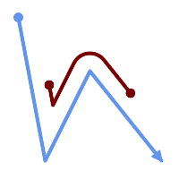

Name
ST_LocateBetween — M値の範囲に合致する部分ジオメトリを返します。
Synopsis
geometry ST_LocateBetween(geometry geom, float8 measure_start, float8 measure_end, float8 offset = 0);
説明
指定された範囲のM値を持つ入力ジオメトリの部分ジオメトリとなるジオメトリ (コレクション)を全て返します。
offsetが与えられた場合には、結果は、入力ラインの左または右に、指定された距離だけ移動します。正のオフセット値で左に、負の値で右にそれぞれ移動します。
凸でないPOLYGONを抜き出すと不正なジオメトリを返すことがあります。
ISO/IEC 13249-3 SQL/MM 空間標準で規定されているため、このような意味になります。
Availability: 1.1.0 それより前はST_Locate_Between_Measuresでした。
Changed: 2.0.0 以前の版ではST_Locate_Between_Measuresと呼ばれていました。
Enhanced: 3.0.0 - POLYGON, TIN, TRIANGLEへの対応が追加されました。
 この関数はM値に対応します。
この関数はM値に対応します。
このメソッドはSQL/MM仕様の実装です。
SQL-MM IEC 13249-3: 5.1
例
SELECT ST_AsText(
ST_LocateBetween(
'MULTILINESTRING M ((1 2 3, 3 4 2, 9 4 3),(1 2 3, 5 4 5))':: geometry,
1.5, 3 ));
------------------------------------------------------------------------
GEOMETRYCOLLECTION M (LINESTRING M (1 2 3,3 4 2,9 4 3),POINT M (1 2 3))

M値が2と8の間になる辺を持ち左にずれたラインストリング
SELECT ST_AsText( ST_LocateBetween(
ST_AddMeasure('LINESTRING (20 180, 50 20, 100 120, 180 20)', 0, 10),
2, 8,
20
));
------------------------------------------------------------------------
MULTILINESTRING((54.49835019899045 104.53426957938231,58.70056060327303 82.12248075654186,69.16695286779743 103.05526528559065,82.11145618000168 128.94427190999915,84.24893681714357 132.32493442618113,87.01636951231555 135.21267035596549,90.30307285299679 137.49198684843182,93.97759758337769 139.07172433557758,97.89298381958797 139.8887023914453,101.89263860095893 139.9102465862721,105.81659870902816 139.13549527600819,109.50792827749828 137.5954340631298,112.81899532549731 135.351656550512,115.6173761888606 132.49390095108848,145.31017306064817 95.37790486135405))